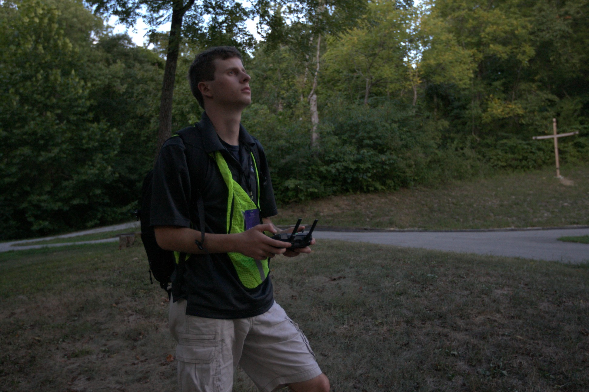
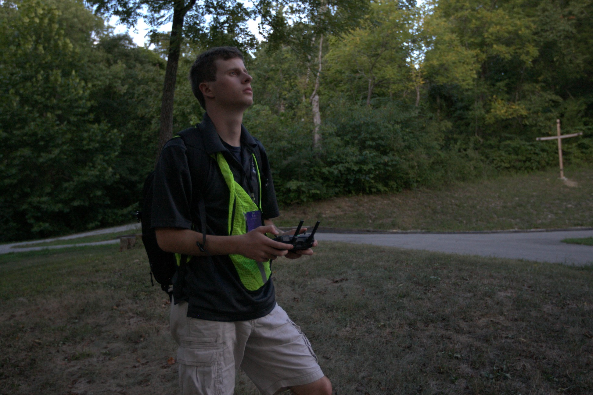

.jpg)
Drone Experience
I recieved my Part 107 license, or drone license, in the summer or 2024. I had someone close to me reccomend the license as if you have your Private Pilots License it is extremely easy to acquire a drone license. I use that drone license for two different jobs, I work for LouCity as surveilence after games, and I assist TheDroneRanger with work as well. The equipment I use is a DJI Mavic 2, and the DJI Pro Mavic 2. The LouCity work is monitoring and recording so that if something were to happen we have the footage. In addition I'm responsible for editing and delivering the footage in a timely manner. The work I do with TheDroneRanger ranges very far. Recently we did REPO work. We were tasked with going to around 100 homes and taking pictures of the lots to record if the specific car was there, we were not responsible for finding the car if it was not in the lot, we simply were delivering data. The drone work I do has helped me create experience in a range of professional fields while also being given room to fail and learn.
.jpg)
 
